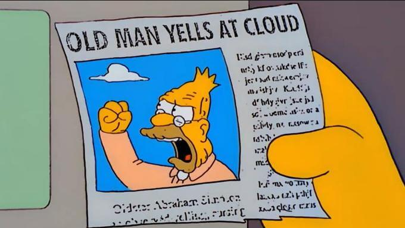

America’s very identity is in crisis. Politicians aren’t solving problems, oligopolies are arguably more
powerful than ever, along with ever increasing rates of socio-economic inequality.
Not only is the world’s most powerful country wavering in the face of new global superpowers, but its
own people can’t afford homes and have been jaded and profoundly angered by the media and political
system, bringing us to what feels like the brink of civil war.
almost 50% of both Democrats and republicans have a very unfavorable view of one another (Pew Research Center), up from 17% and 16% back in 1994. That means both political halves hate each other equally today.
But you already knew that. Gloom and doom is the new global normal, and you’ve heard this stuff a billion times.
Beyond the issues themselves, mass media rarely explores the underlying explanations for this state of
limbo we’re in, and in many ways, that wouldn’t be in its best interest, because it plays a big role in
our being in it.
There’s this general growing anger, and there's really valid reasons for this. The whole country can feel it, and I think I speak
for most of us when I say that each of us feels that ball in our stomachs everytime we turn on the news or doomscroll through twitter. Getting triggered
has become the normal reaction to the never ending onslaught of injustice and lies we hear and see on our screens. That
anger is not only making the general state of the country worse – it’s making our individual lives
worse and less meaningful. Anger can affect us in many ways
and trying to change our innate reactions might just be a step towards in the right dircetion.
For the sake of this website, you have been assigned a team. You can never
forget. You are and always were a member of the eggplant team. You have been protected, raised, and
nourished by the eggplants. Those broccolis never wanted peace anyways. They've always been out for
their own interest, and they taste terrible. No matter what, we need to always make sure the broccoli
team loses. No matter what.
Broccoli overcooker
@EggplantLover399
Broccoli has continuously made the house smell awful. We have different
visions for this kitchen, and ours involves better smells and tastes ü§∑
Of all the different types of tweets that get promoted, anger based tweets tend to get much greater
algorithmic promotion(Milli, 2023): It’s not random that we get shown content that makes us angry, and
Twitter is definitrly the only media hub like this (I refuse to call it X). Many traditional news and media organizations have been
leaning into more polarizing and angering stances over the past few years for one specific reason:
it’s super profitable for them.
Anger greatly increases our stress levels and effectively short circuits our ability to think critically (Blair, 2011). In the
context of social media, this means we engage more and spend more time on these services, where we'll see more ads and generate more ad dollars for these companies. They are literally financially incentivized to promote content that hijacks our brains, lining their pockets whilst actively dividing society in
the process.
And we can sit here waving our arms at the sky,
or we can think about the ways we can change
things. We can’t these companies' business models, but what we can change is how we engage with them and
react to their content.
To do so, we first need to understand the ways we as individuals can try to reduce this externally inflicted anger. This can help us try to think more critically in times of ever-increasing societal
non-discourse.
But how can I keep my calm when there’s people spreading misinformation and fake news?!!
1 - Changes in how knowledge is produced and
consumed
National Eggplant Association
@NEAOfficial
Reminder that Big broccoli has been continuously lobbying through various ad
campaigns misleading people into thinking they are healthier
The fact that we lack the original poster’s information changes the nature of the tweet: different
people have different incentives to post different things, and without knowing who’s posting, we’re
unsure of the validity of the information.
A lot of the time, upon closer inspection, we find that different social actors have different incentives to behave and post
different things.
National Eggplant Association
@NEAOfficial
Reminder that Big broccoli has been continuously lobbying through various ad
campaigns misleading people into thinking they are healthier.
#fightthegreen
33k
397k
1.3M
5M
An idea you might’ve seen online is that we now live in a post-truth world: through social and
traditional media, platforms act as bubbles where you only hear things that further
confirm your beliefs, with the end of this logic leading people to have different understandings of what the truth is on any given topic.
Let’s put it another way: A journalist’s post, a meme page, an advertisement, and a friend’s quip about
the price of gas
Taste better cooked
@INeedOliveOil
WHAT'S NEXT? MY STEM??
33k
397k
1.3M
5M
are all of equal
visual importance, yet each of those elements had fundamentally different goals. On TV, the same can be
said: content goes from informational, to advertising, to fiction and cartoons all under the guise of
entertainment. But contrary to social media, TV has historically put a lot of importance on the figure
of the expert, used to disseminate empirically validated information. On social media, the user is not
only a consumer of knowledge and information, but becomes a producer of one.
This change in how knowledge is produced brought a great shift to how we consume information. The
infinite amount of data available and its open accessibility to almost everyone leads to a situation
where the expert’s perspectives aren’t seen as unequivocally true in the way they used to be (Malcolm,
2021) due to equal access to informaintion . In addition to this, the persistent manipulative use of the expert figure
in mass media across decades has also contributed.
This is part of the reason why our collective trust in experts has been eroded, enabling the prominence
of alternative truths (or facts), and also explains the public loss of shame of politicians and other public figures in the face of being proved wrong
(Malcolm, 2021).
Ok, so we disagree on the truth,
2 - The death of reason or the fuel of polarization
Because of the disagreement in what the truth actually is, the way we have conversations has also
changed.
In most debates, beyond trying to prove we’re right or trying to persuade the opposing side, many of us
resort to anger, because no amount of talking will lead to any change in the way that people think. If
it does, it’ll be in a very superficial way and would at best come in passing in a future conversation.
Part of the reason why is that we have become a society of opinions.
Pick the definition for the word OPINION:
This shows us that opinion, contrary to a perspective, is a lot more like a belief – something that is
irrational and profoundly based in emotion and identity, so it makes little to no sense to debate
beliefs: There is a virtually non-existent chance that you will change someone’s mind on their beliefs.
The tenants of human identity are founded in these beliefs, and they fuel our moral compass.
But yet, when we try to have a conversation with one another, we ask each other what our opinions are.
Not only that, most of social media is focused on pushing the user to either take a stance or double
down on one we already have by feeding us more radical content each time:
“Significant division can undermine confidence in democracy or democratic institutions and lead to
“affective polarization,” when citizens begin to view each other more as enemies than legitimate
opposition.”
– Associated Press, David Klepper
And because we can’t agree on what the truth is, we can never come to a logical conclusion on
finding solutions. (Harel, 2020).
Therefore, opinion and truth get blended: opinions – which are a form of belief as explained earlier –
are collectively agreed upon and lead to the creation of the ingroup and outgroup – an us vs. them
situation (Malcolm, 2021). The consequences are that clan-like behavior becomes natural in such a
context, and rationale and reason are for the most part forgotten, further amplifying anger and
polarization.
So now that we’ve established what is a post-truth society and why America is in its current state, how
can we actually bring about meaningful change?
3 - Unf*cking the country
Mental frameworks are what drives us to feel and think a certain way. But every framework also has an
end goal of its own, sometimes motivated by ideology, sometimes by beliefs, sometimes by profit.
Larger frameworks operate as funnels, and can go to great lengths to make themselves particularly
attractive if they have a financial or power-based incentive behind them. In the case of America and the
political process, there are many incentives that express themselves through a variety of ways, and on
either side they are conducive to making the other side the enemy instead of focusing on what’s best for
the people. Through this hatred, we stop actually considering people as people: Hate is the most
powerful vector for dehumanization (Mendez, 2023).
We don’t care about what the ideas are about,
because it’s not what matters anymore.
From the start of this website, you were imposed a side. Throughout it, you were encouraged to
antagonize the opposing side through your assumptions. In real life, the same thing happens, but aditionally this behaviour can be rewarded.
We are not only encouraged to pick a side and attack the opposing side through example, but we are also
rewarded socially through our filter bubbles. Instead of asking
ourselves why we’re attacking, we’re doing so because we picked a side today, yesterday, years ago, as a
child. That side isn’t only what we say we agree with. It’s who we are, and we’re going to stick to it, like a
football team.
Although contrary to sports, politics is a lot more than a local community that irrationally vouches for their
side, regardless of their chances against the opposition. It's about ideas, policies, and wealth
distribution. It's the most powerful practice we know of, because it can dictate
all other practices. Beyond the individual level, whatever your industry is, politics controls it in one way
or another, so staying involved is super important. Our conversations and exchanges are being repeatedly highjacked by external actors to further their own collective agendas on both sides of the aisle. We are constantly debating beliefs, which isn't to say that isn't important or necessary, but it shouldn't be what we speak aout at all times.
Ideas help us not only understand what we actually think on a given topic, but also help us perceive the deeper
incentives behind the line being held. We are fed tons upon tons of information every day, and we simply
don’t have the time to filter through and check various sources on a given topic, and it seems simpler
to take our sources at face value because it is. Living in this current media climate means when surfing social media the individual ends up doing the journalist's job, checking sources, analyzing ideas provided, or if not they risk believing information that could serve incentives that are completely foreign to their own needs. Not only can we then get pushed in a specific direction, but we
get progressively entrenched in the ideas and logics of that side, effectively closing our minds to other ideas.
And in a way, both sides are speaking always speaking the truth, but within their given frameworks.
These frameworks of thought are meant to keep us boxed
into these mindsets, because it helps both sides for you to hate the opposing side instead of question both: your side wins
because they have someone that will vouch for them no matter what, and the opposing side has your hate
as fuel to strengthen their own base in an emotional way. The Democratic and Republican parties want you
to hate the opposite side.
Even though you
may feel that your side is out for your best interests, it isn’t: it's out for its leaders own best
interest. Every time they can use emotion, they will do so to get you more invested in a more irrational
way, using triggers to make you agree with ideas you might not actually morally align with. And also, it
completely eliminates the desire for a third, or fourth political party, consolidating their power and
removing the possibility of alternative solutions to those each side proposes.
Now don’t get me wrong, we still need emotions in many ways – they're an essential part of how we construct our
ideas and our identity, and are a fundamental component of dialogue – rather, we need to
significantly reduce how much we rely on it. When we talk about politics, the question should never be
'How do you feel about this?', but rather 'What do you think about this?'.
Instead of focusing on our emotional knee-jerk reaction, we can attempt to actually think about the
ideas that we’re faced with and challenge them in a thought-out way, dissociated from our projected identity and centered on our personal moral compass. We can also try to understan if there are
dissimulated motives behind those leading the conversation that we might not have paid attention to otherwise.
It also can actually enable you to see how much your moral values actually align with the side you feel
closer to, and vice versa – are these ideas representative of how I lead my life? Of how I wish to lead my
life? If we start to reason more than we react, we can become a lot more aware of the intentions of
those with whom we agree, and also become more considerate of ideas and propositions from those we disagree with.
Although that prospect might not seem attractive to you, these are people that hold the same power as
you through their votes: If you just see them as another one of THEM, you’ll inevitably become, if you
don't already feel such, cynical and jaded,
just like everyone else. Does cynicism seem like a meaningful way for us to lead our lives? That’s for
you to
answer.
My point is that through greater empathy, we can re-humanize those around us, that we’ve grown up with, that we live
with, that we love. Finding that empathy is crucial in leading a more fulfilling life, and makes room for a more
meaningful society that actually cares about creating a better world for its members, not just
pretending it does.
Hate can only do so much for our lives. We've been feeling it for a while, we've been in the heart of the eclipse for a long time. But the sun will come back at some point. Thinking about the information we ingest and the way we speak to
each other is conducive
in treating our fellow humans as such.
And who knows, maybe in the process it might make our collective social environment just a little bit better.